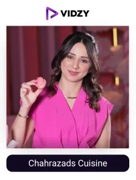
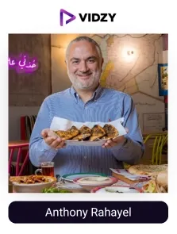
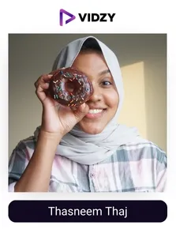
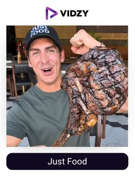

UAE, with its rich cultural heritage and global cuisines, is the perfect destination for unforgettable food experiences. From traditional Emirati dishes to global gourmet experiences, it offers a wide array of local and international food cuisines, making the country a unique and exciting place for food lovers.
Dubai is ranked as the second leading gastronomy capital globally, showing the city's dynamic food culture, which attracts both residents and visitors seeking unique dining experiences.
The food industry in the UAE has grown rapidly in recent years, with increased use of social media, availability of fast online food delivery services, and food festivals like the Dubai Food Festival contributing to the growth. According to sources, the industry adds $39.75 billion to the total economy, and is expected to increase 4.86% by 2029.
A recent study revealed that UAE diners consult social media before selecting a restaurant, highlighting the power of online content in driving food explorations(PMC). Here, Top food influencers in Dubai are the trusted voices, changing the way people discover and experience food. Their passion for food helps people discover new flavours and stay connected to both local traditions and global food trends.
Dubai is home to many famous food influencers, who travel around the country, explore various cafes and restaurants, review different cuisines and share unique delicious recipes. They help the audience discover the city’s hidden local gems to some of the best high-end dining experiences in the world. They have become the trusted voices for people's food choices and dining decisions, thereby helping brands achieve their goals and contributing to the overall growth of the food and hospitality industry in Dubai.
Let's learn about the food content creators in detail.
Who are the Food UGC creators?
Food UGC creators create and share relatable and trustworthy content related to food on social media platforms. They travel around the country and beyond and explore different cuisines, evaluate various restaurants and cafes, discover hidden food spots, and review the food.
Their recommendations have the power to influence consumers to explore new culinary experiences, making them valuable partners for food brands.
Reports say 80% of people follow the best food content creators on social media, and 70% select their dining based on their suggestions.
As the leading UGC company in Dubai, we have researched the list of top food UGC creators in Dubai, based on a variety of factors such as influencer value, audience engagement, brand alignment, and more. Food brands in the Middle East can partner with them and leverage the potential of UGC to boost their growth results.
Let’s explore the list of top food UGC creators in Dubai, UAE.
Top Food UGC Creators in Dubai, UAE
Contents
-

1. Chahrazads Cuisine
Channel: Chahrazads Cuisine
Followers: 756KEngagement Rate: 1.38%About The Influencers-
Chahrazad is a Dubai-based food influencer, chef, and cookbook author. She shares simple and easy-to-follow food recipes, mostly focused on desserts. She has won the Food Creator of the Year award. She is the owner of Chahrazad's Cuisine.
She shows people how to make delicious food without making it complicated. That's a big reason why so many food lovers in the UAE and beyond trust her content.
-
2. Meghana Rao
Channel: Meghana Rao
Followers: 86.5KEngagement Rate: 1.68 %About The Influencers-
Meghana Rao is a Dubai-based food and travel blogger and content creator. She shares her reviews on restaurants, hotels, and various other destinations with her followers. She has travelled to more than 60 countries, exploring different cuisines.
She also writes blogs that cover food, travel, books, and lifestyle topics. Meghana’s blog is recognised among the top 50 Dubai blogs.
-
3. Kim & Den
Channel: Kim & Den
Followers: 92.2KEngagement Rate: 1.63%About The Influencers-
Kim & Den are known as @wheremyfoodat on Instagram. They are Dubai-based food content creators who share their culinary experiences with their food-enthusiastic audience. They provide insights on various cuisines and reviews on various dining options.
They have gathered many prestigious awards for their food explorations. The Ahlan People's Choice Award, BBC Good Food Blog of the Year, The Cosmopolitan Food Influencer Award, and the Stylist Arabia Social Media Award are some of them.
They have also been featured in the media, highlighting their contribution to Dubai’s growing food culture.
-
4. Ahmed Mohamed Younes
Channel: Ahmed Mohamed Younes
Followers: 763KEngagement Rate: 1.86%About The Influencers-
Ahmed Mohamed Younes is a popular food UGC creator based in Dubai. His content displays his cooking skills, which are unique and different from others. He makes the process very much interesting and engaging for his followers. His videos are simple and easy to follow, which connects his audience with Dubai's food culture.
Younes' followers love his experiments with food, which inspire them to enjoy and consider cooking with a new perspective.
-

5. Anthony Rahayel
Channel: Anthony Rahayel
Followers: 535KEngagement Rate: 1.08%About The Influencers-
Anthony Rahayel is known as @nogarlicnoonions on Instagram. He explores restaurants, markets, and hidden food spots, mostly in Lebanon and Dubai. Anthony focuses on local flavours, traditional dishes, and real street food experiences. He is known for his honest reviews and detailed videos.
His goal is to support small businesses, promote local food culture, and help his followers discover authentic places to eat.
Anthony’s content is easy to follow and is trusted by many food lovers in the country and beyond.
-

6. Thasneem Thaj
Channel: Thasneem Thaj
Followers: 502KEngagement Rate: 7.55%About The Influencers-
Thasneem Thaj is a food content creator based in Dubai. She loves exploring and sharing the reviews of restaurants, cafes, and other street food spots in the city with her followers.
Thasneem mostly focuses on affordable food options, which provide both quality food and experiences.
Her profile also treats her visitors to culinary flavours from different parts of the globe. Thasneem’s food adventure reels are much admired by her food enthusiast community.
-
7. Joyce Mrad
Channel: Joyce Mrad
Followers: 659KEngagement Rate: 3.02%About The Influencers-
Joyce Mrad is a content creator who shares her food wisdom with her audience on Instagram. She is a self-taught cook, develops various recipes, a food stylist and photographer. Her feed displays flavorful dessert recipes, which are equally pleasing to the eye. She mostly focuses on healthy options.
She shares step-by-step recipes, making it easier for her audience to follow and try them out.
Joyce has also received the "Popularity Prize 2025" at the Food Influencers Awards.
-
8. Hesa Al Khalifa
Channel: Hesa Al Khalifa
Followers: 264KEngagement Rate: 1.15%About The Influencers-
Hesa Al Khalifa is a seasoned consultant chef and menu curator, certified by ICCA and City & Guilds. On her Instagram profile, Hesa takes her audience on a gourmet adventure across the Arabian Gulf Peninsula. She loves exploring both local and global cuisines.
Her love for traditional local delicacies and restaurant recommendations is admired by her followers.
-
9. Shabina Shamsudeen
Channel: Shabina Shamsudeen
Followers: 103KEngagement Rate: 1.54%About The Influencers-
Shabina Shamsudeen is a content creator based in Dubai who shares her love for travel, food, and lifestyle. She shares easy-to-follow recipes, her exploration with food, and the best moments of her daily life. From baking and grilling to making authentic Oriental dishes and festival specials, Shabina covers a wide range of cooking styles.
She also shares her passion for South Indian recipes, for which she uses traditional home cooking techniques.
-

10. Just Food
Channel: Just Food
Followers: 330KEngagement Rate: 1.78%About The Influencers-
Alex, known as @justfooddxb on Instagram, is a popular food content creator based in Dubai. He has a Top 3 Food Guide ranking in the UAE. He visits different restaurants, cafes, and food spots across the UAE and various other countries and shares his honest reviews about the food with his food lovers community.
His content is a perfect guide for his foodie followers to discover some of the best local food trucks to high-end dining in the UAE.
Conclusion:
In Dubai, food UGC creators are key experts in culinary trends, restaurant reviews, and food recommendations. Their content, from delicious recipes to restaurant visits, connects with an audience that values authentic food experiences.
Their honest reviews and relatable content influence the purchasing decisions and dining choices of audiences. As a result, top food brands and restaurants in the UAE collaborate with these creators to build brand trust and drive growth.
As the top UGC agency, we connect brands with the most influential food creators in Dubai to create authentic, engaging content that achieves exceptional results.
Let’s work together and grow your food brand like never before.